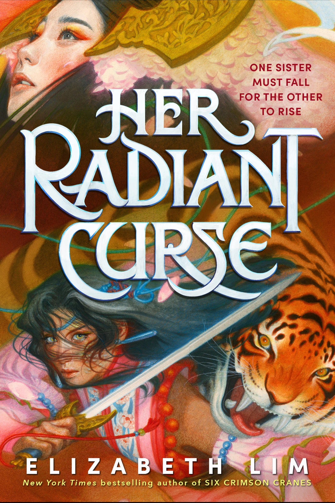

🔙 Back to All Books
- 
-
Her Radiant Curse
Elizabeth Lim
Book Description
NEW YORK TIMES BESTSELLER • From the critically acclaimed author of SIX CRIMSON CRANES comes a fantasy tale of two sisters—one as beautiful as the other is monstrous—who must fight to save each other when a betrothal contest gone wrong unleashes an evil that could sever their bond forever!
One sister must fall for the other to rise.
Channi was not born a monster. But when her own father offers her in sacrifice to the Demon Witch, she is forever changed. Cursed with a serpent’s face, Channi is the exact opposite of her beautiful sister, Vanna—the only person in the village who looks at Channi and doesn’t see a monster. The only person she loves and trusts.
Now at seventeen, Vanna is to be married off in a vulgar contest that will enrich the coffers of the village leaders. Only Channi, who’s had to rely on her strength and cunning all these years, can defend her sister against the cruelest of the suitors. But in doing so, she becomes the target of his wrath—launching a grisly battle royale, a quest over land and sea, a romance between sworn enemies, and a choice that will strain Channi’s heart to its breaking point.
Genres
Fantasy | Young Adult | Romance | Dragons | Fiction | Mythology
About the Author
Elizabeth Lim grew up on a hearty staple of fairy tales, myths, and songs. Her passion for storytelling began around age 10, when she started writing fanfics for Sailor Moon, Sweet Valley, and Star Wars, and posted them online to discover, "Wow, people actually read my stuff. And that's kinda cool!" But after one of her teachers told her she had "too much voice" in her essays, Elizabeth took a break from creative writing to focus on not flunking English...